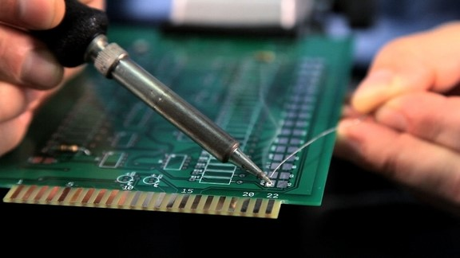
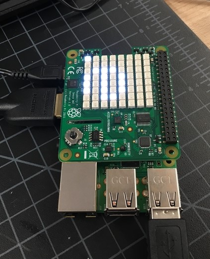
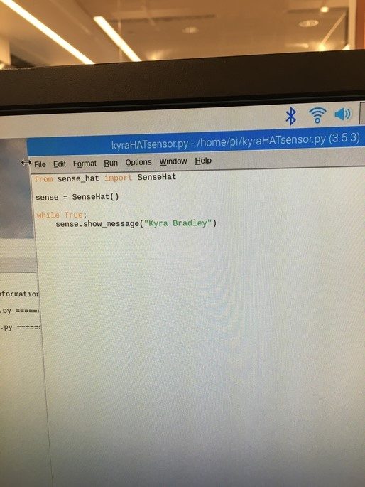
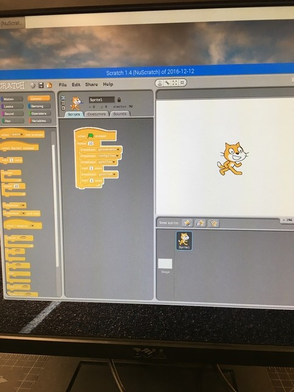
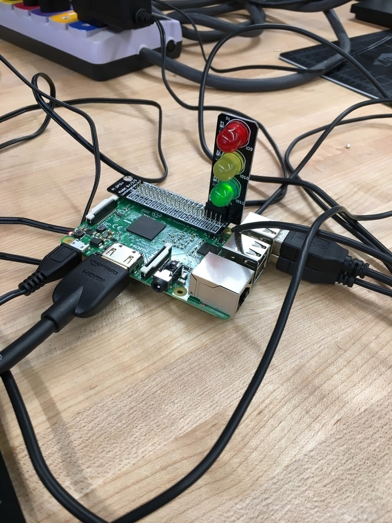
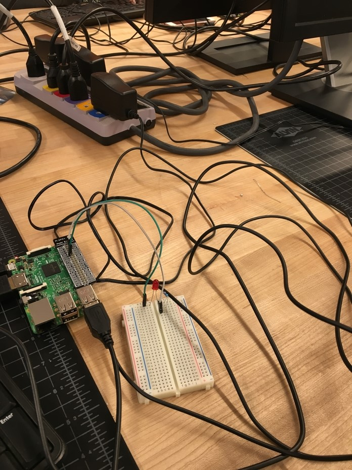

Soldering and Raspberry Pi
Project Description:
Soldering was one of our last hands on projects for this class. Soldering is a process in which two or more items
are joined together by melting a filler metal, solder, to attach the pieces. I did a few Soldering projects last year
with Mr. Blakenship, so I was already familiar with the process. This year I put a heart together. There were many LEDs
to attach, but the heart worked. It has two outlines of a heart, and they alternate flashing.

Our last assigned 'project' we experimented with Raspberry Pi. We used the Raspberry Pi system, to operate a computer. Built
into the Raspberry Pi, is HDMI, wifi, camera port, four USBs and serveral other useful features. After the monitor turned on,
we used programs like Scratch and Python. Scratch was a more simplistic program to use, and with Python, we typed the codes.
We set up an LED on the bread board, and connected it to the Raspberry Pi, and I was able to get the ligtht to light up. Based off
of the code I typed in, the light would flash with a different pattern. After we experimented with an LED, we then used a Traffic
Light attachment. We had to come up with the code, that would make the lights light up like a normal traffic light. Then we attached
a Sense Hat, it was a diffternet type of board that had an 8x8 square of built in LEDs. We typed a code in, that ran my name across
the board. On the image below, you can see an "e" lit up on the board. I also have a picture of codes below, one is from Scratch
and the other is from Python.




